<!DOCTYPE html><html><head><meta charset="utf-8"><title>在 GCP 建立 Network Load Balancer 和 HTTP Load Balancer | Titangene Blog</title><meta http-equiv="X-UA-Compatible" content="IE=edge"><meta name="viewport" content="width=device-width,initial-scale=1,maximum-scale=1"><meta name="HandheldFriendly" content="True"><meta name="apple-mobile-web-app-capable" content="yes"><meta name="author" content="Titangene"><link rel="shortcut icon" href="/favicon.ico"><link rel="alternate" href="/atom.xml" title="Titangene Blog"><meta name="description" content="本篇是紀錄在 Google 的 Qwiklab 平台內，完成「Set Up Network and HTTP Load Balancers」這個 quest 所學到的內容，包括如何建立多個 web server instance，以及如何建立 network load balancer 和 HTTP load balancer。"><meta property="og:type" content="article"><meta property="og:title" content="在 GCP 建立 Network Load Balancer 和 HTTP Load Balancer"><meta property="og:url" content="https://titangene.github.io/article/gcp-network-and-http-load-balancer.html"><meta property="og:site_name" content="Titangene Blog"><meta property="og:description" content="本篇是紀錄在 Google 的 Qwiklab 平台內，完成「Set Up Network and HTTP Load Balancers」這個 quest 所學到的內容，包括如何建立多個 web server instance，以及如何建立 network load balancer 和 HTTP load balancer。"><meta property="og:locale" content="zh_TW"><meta property="og:image" content="https://titangene.github.io/images/cover/gcp.jpg"><meta property="article:published_time" content="2019-04-24T14:22:43.000Z"><meta property="article:modified_time" content="2019-04-24T14:21:10.000Z"><meta property="article:author" content="Titangene"><meta property="article:tag" content="GCP"><meta property="article:tag" content="HTTP"><meta property="article:tag" content="Load Balancer"><meta name="twitter:card" content="summary_large_image"><meta name="twitter:image" content="https://titangene.github.io/images/cover/gcp.jpg"><meta name="twitter:creator" content="@titangeneTW"><meta name="twitter:site" content="@titangene_blog"><meta property="fb:admins" content="100001106016019"><meta property="fb:app_id" content="2470546159839111"><meta property="og:image:width" content="1200"><meta property="og:image:height" content="630"><meta name="google-site-verification" content="AaJ39L7h-nWwJjXJMhAMtXSF6H6BUgGWXC80kYvLic8"><link href="https://fonts.googleapis.com/css2?family=Roboto&display=swap" rel="stylesheet"><link href="https://fonts.googleapis.com/css?family=Source+Code+Pro&display=swap" rel="stylesheet"><link rel="stylesheet" href="https://cdnjs.cloudflare.com/ajax/libs/font-awesome/5.13.0/css/all.min.css"><link rel="stylesheet" href="https://unpkg.com/gitalk/dist/gitalk.css"><link rel="stylesheet" href="/style.css"><script async src="https://www.googletagmanager.com/gtag/js?id=UA-129758206-1"></script><script>!function(a){function n(){dataLayer.push(arguments)}a.dataLayer=a.dataLayer||[],n("js",new Date),n("config","UA-129758206-1")}(window)</script><script>function setLoadingBarProgress(e){document.getElementById("loading-bar").style.width=e+"%"}</script><meta name="generator" content="Hexo 4.2.0"><link rel="alternate" href="/atom.xml" title="Titangene Blog" type="application/atom+xml"></head></html><body><div id="loading-bar-wrapper"><div id="loading-bar"></div></div><script>setLoadingBarProgress(20)</script><header class="l_header"><div class="wrapper"><div class="nav-main container container--flex"><a class="logo flat-box" href="/">Titangene Blog</a><div class="menu"><ul class="h-list"><li><a class="flat-box nav-home" href="/">Home</a></li><li><a class="flat-box nav-archives" href="/archives">Archives</a></li></ul><div class="underline"></div></div><div class="m_search"><form name="searchform" class="form u-search-form"><input type="text" class="input u-search-input" placeholder="Search"> <i class="fas fa-search"></i></form></div><ul class="switcher h-list"><li class="s-search"><a class="fas fa-search" href="javascript:void(0)"></a></li><li class="s-menu"><a class="fas fa-bars" href="javascript:void(0)"></a></li></ul></div><div class="nav-sub container container--flex"><a class="logo flat-box" href="/">Titangene Blog</a><ul class="switcher h-list"><li class="s-comment"><a class="far fa-comment-alt" href="javascript:void(0)"></a></li><li class="s-top"><a class="fas fa-arrow-up" href="javascript:void(0)"></a></li><li class="s-toc"><a class="fas fa-list-ol" href="javascript:void(0)"></a></li></ul></div></div></header><aside class="menu-phone"><nav><a href="/" class="nav-home nav">Home </a><a href="/archives" class="nav-archives nav">Archives</a></nav></aside><script>setLoadingBarProgress(40)</script><div class="l_body"><div class="container clearfix"><div class="l_main"><article id="post-gcp-network-and-http-load-balancer" class="post white-box article-type-post" itemscope itemprop="blogPost"><section class="meta"><h2 class="title"><a href="/article/gcp-network-and-http-load-balancer.html">在 GCP 建立 Network Load Balancer 和 HTTP Load Balancer</a></h2><span class="post-time"><span class="post-meta-item-icon"><i class="fa fa-calendar"></i> </span><span class="post-meta-item-text">發表於</span> <time title="建立時間：2019-04-24 22:22:43" itemprop="dateCreated datePublished" datetime="2019-04-24T22:22:43+08:00">2019-04-24</time></span> <span class="comments-count"><span class="post-meta-divider">|</span> <span class="post-meta-item-icon"><i class="fas fa-comment"></i> </span><a href="https://titangene.github.io/article/gcp-network-and-http-load-balancer.html#comments" class="article-comment-count">留言</a></span><div class="post-category"><span class="post-meta-item-icon"><i class="fa fa-folder"></i> </span><span class="post-meta-item-text">分類於</span> <span itemprop="about" itemscope itemtype="http://schema.org/Thing"><a href="/categories/cloud/" itemprop="url" rel="index"><span itemprop="name">Cloud</span></a></span></div></section><section class="toc-wrapper"><h3>目錄</h3><ol class="toc"><li class="toc-item toc-level-2"><a class="toc-link" href="#本篇將會做什麼？"><span class="toc-text">本篇將會做什麼？</span></a></li><li class="toc-item toc-level-2"><a class="toc-link" href="#準備"><span class="toc-text">準備</span></a></li><li class="toc-item toc-level-2"><a class="toc-link" href="#開始你的-Lab，然後登入-GCP-Console"><span class="toc-text">開始你的 Lab，然後登入 GCP Console</span></a></li><li class="toc-item toc-level-2"><a class="toc-link" href="#啟動-Google-Cloud-Shell"><span class="toc-text">啟動 Google Cloud Shell</span></a></li><li class="toc-item toc-level-2"><a class="toc-link" href="#為所有資源設定預設的-region-和-zone"><span class="toc-text">為所有資源設定預設的 region 和 zone</span></a></li><li class="toc-item toc-level-2"><a class="toc-link" href="#建立多個-web-server-instance"><span class="toc-text">建立多個 web server instance</span></a><ol class="toc-child"><li class="toc-item toc-level-3"><a class="toc-link" href="#建立-startup-script"><span class="toc-text">建立 startup script</span></a></li><li class="toc-item toc-level-3"><a class="toc-link" href="#建立-instance-template"><span class="toc-text">建立 instance template</span></a></li><li class="toc-item toc-level-3"><a class="toc-link" href="#建立-target-pool"><span class="toc-text">建立 target pool</span></a></li><li class="toc-item toc-level-3"><a class="toc-link" href="#建立-managed-instance-group"><span class="toc-text">建立 managed instance group</span></a></li><li class="toc-item toc-level-3"><a class="toc-link" href="#設定防火牆"><span class="toc-text">設定防火牆</span></a></li></ol></li><li class="toc-item toc-level-2"><a class="toc-link" href="#建立-Network-Load-Balancer"><span class="toc-text">建立 Network Load Balancer</span></a></li><li class="toc-item toc-level-2"><a class="toc-link" href="#建立-HTTP-S-Load-Balancer"><span class="toc-text">建立 HTTP(S) Load Balancer</span></a></li><li class="toc-item toc-level-2"><a class="toc-link" href="#參考來源"><span class="toc-text">參考來源</span></a></li></ol></section><section class="article typo"><div class="article-entry" itemprop="articleBody"><p>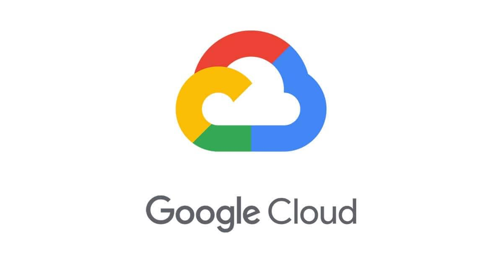</p><p>本篇是紀錄在 Google 的 Qwiklab 平台內，完成「<a href="https://www.qwiklabs.com/focuses/558?parent=catalog" target="_blank" rel="noopener">Set Up Network and HTTP Load Balancers</a>」這個 quest 所學到的內容，包括如何建立多個 web server instance，以及如何建立 network load balancer 和 HTTP load balancer。</p><a id="more"></a><p>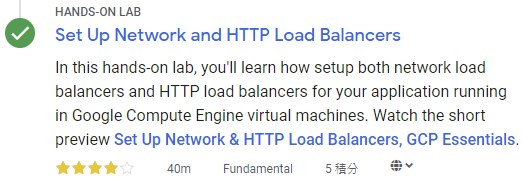</p><p>在此 lab 中，你將了解 network load balancer 和 HTTP load balancer 之間的差異，以及如何為 Google Compute Engine (GCE) VM 上執行的應用程式設定 load balancer。</p><p>你可通過多種方式<a href="https://cloud.google.com/load-balancing/docs/load-balancing-overview#a_closer_look_at_cloud_load_balancers" target="_blank" rel="noopener">在 GCP 內進行負載平衡 (load balance)</a>。此 lab 將教你完成以下 load balancer 的設定：</p><ul><li>L3 (Network Layer) <a href="https://cloud.google.com/compute/docs/load-balancing/network/" target="_blank" rel="noopener">Network Load Balancer</a></li><li>L7 (Application Layer) <a href="https://cloud.google.com/compute/docs/load-balancing/http/" target="_blank" rel="noopener">HTTP(s) Load Balancer</a></li></ul><h2 id="本篇將會做什麼？"><a class="header-anchor" href="#本篇將會做什麼？"></a>本篇將會做什麼？</h2><ul><li>設定 network load balancer</li><li>設定 HTTP load balancer</li><li>透過實作，了解 network load balancer 和 HTTP load balancer 之間的差異</li></ul><h2 id="準備"><a class="header-anchor" href="#準備"></a>準備</h2><p>在點擊「Start Lab」之前，準備好網路瀏覽器 (推薦用 Google Chrome)，並且至少 40 分鐘可以專注的時間，因為 lab 是有時間限制，當你按下「Start Lab」開始學習時，無法暫停倒數計時，你只能在這段時間內使用 lab 提供給你的全新暫時 GCP Console 可用帳號，時間到之後的幾分鐘就會自動登出。</p><div class="warning"><p>注意：如果你有自己的個人 GCP 帳號或專案，請不要在此 lab 使用</p></div><h2 id="開始你的-Lab，然後登入-GCP-Console"><a class="header-anchor" href="#開始你的-Lab，然後登入-GCP-Console"></a>開始你的 Lab，然後登入 GCP Console</h2><ol><li>如果準備要開始，可以點擊右上角的「Start Lab」開始：</li></ol><p>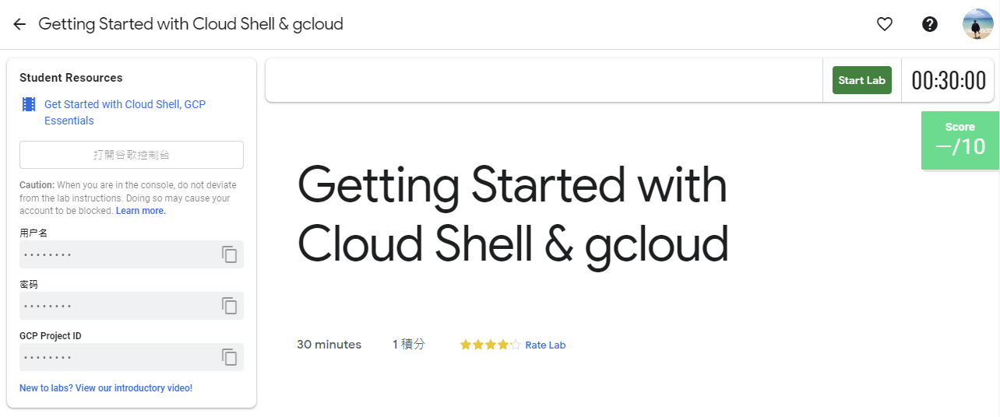</p><ol start="2"><li>接著會出現這個畫面，因為我參加 <a href="https://www.facebook.com/events/2005848903055499/" target="_blank" rel="noopener">GDG Tainan</a> 的活動，活動有提供 Qwiklabs 一個月的免費額度，所以我點選下圖左邊的「Use Subscription」：</li></ol><p>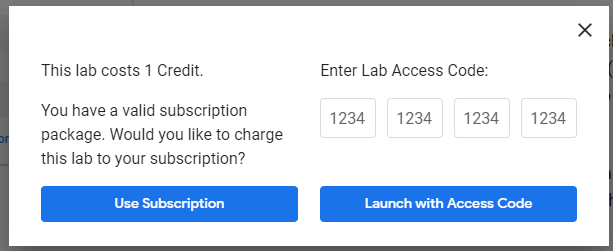</p><ol start="3"><li>Lab 會提供給你免費暫時的 GCP 帳號，複製帳號和密碼，然後點擊「Open Google Console」開啟 <a href="https://cloud.google.com/storage/docs/cloud-console" target="_blank" rel="noopener">GCP Console</a>：</li></ol><p>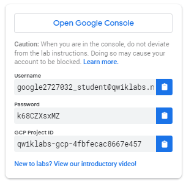</p><p>圖片來源：<a href="https://www.qwiklabs.com/focuses/3563?parent=catalog" target="_blank" rel="noopener">Creating a Virtual Machine | Qwiklabs</a></p><ol start="4"><li>接著就會開啟登入頁面，建議另外開 Chrome 無痕模式來登入 lab 提供的帳號和密碼，因為 Chrome 會紀錄帳密，現在登入的只是暫時帳號，未來不需要用到：</li></ol><div class="warning"><p>注意：這邊是登入 lab 提供的帳號 (也就是 email 必須為 <code>googlexxxxxx_student@qwiklabs.net</code> )，如果你有自己的 GCP 帳號，請不要用於此 lab，避免產生費用</p><blockquote><p>類似於 <code>googlexxxxxx_student@qwiklabs.net</code> 的帳號是一個 Google 帳號，專為 Qwiklabs 學生使用而建立的。它具有特定的域名 (也就是 <code>qwiklabs.net</code> )，並且已分配了 IAM 角色，允許你去存取該 GCP 專案。</p></blockquote></div><p>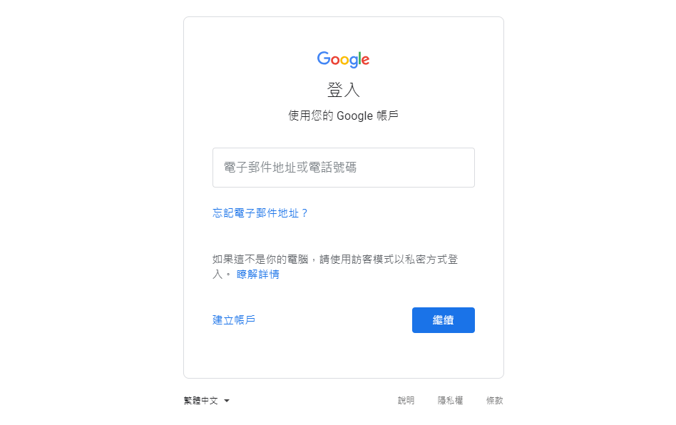</p><ol start="5"><li>接受 terms 和 conditions：</li></ol><p>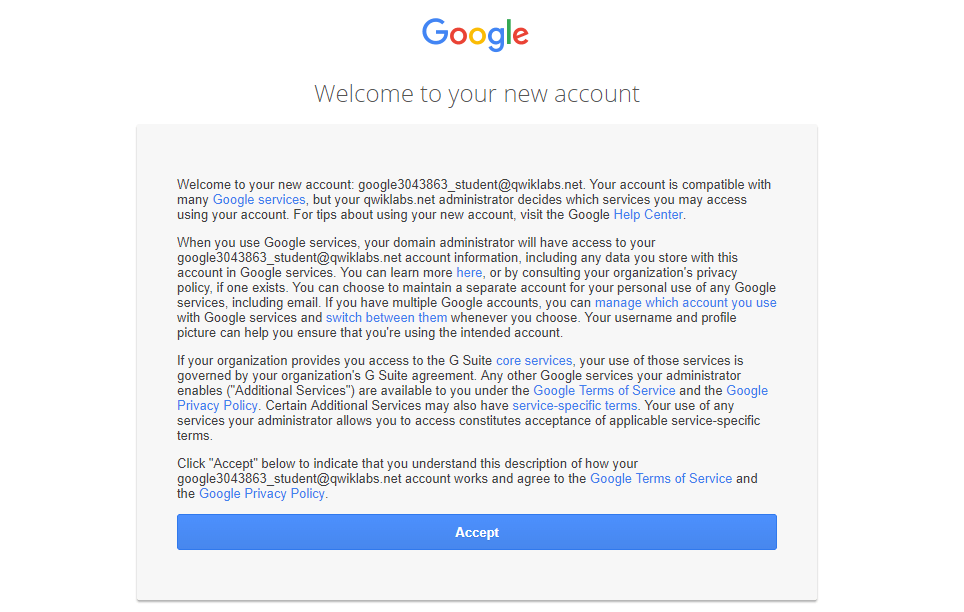</p><ol start="6"><li>不要新增 recovery options 或 two-factor authentication (因為這是一個臨時帳號)：</li></ol><p>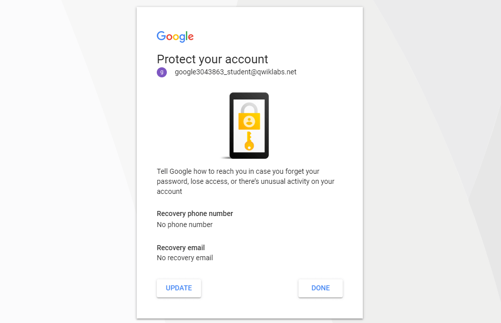</p><ol start="7"><li>勾選同意服務條款：</li></ol><p>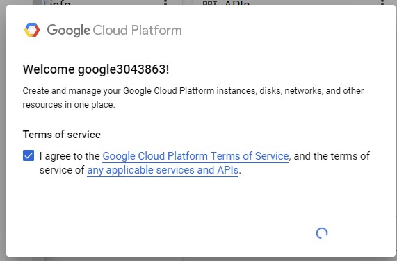</p><p>之後就可以開始使用 GCP Console 囉：</p><p>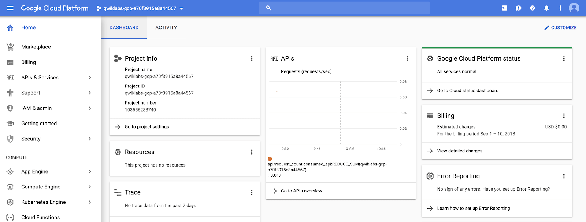</p><h2 id="啟動-Google-Cloud-Shell"><a class="header-anchor" href="#啟動-Google-Cloud-Shell"></a>啟動 Google Cloud Shell</h2><p>Google Cloud Shell 是載入了開發工具的 VM，它提供 5GB 的 home 目錄，並在 Google Cloud 上執行。可用 Google Cloud Shell 提供的 command-line 來存取 GCP 的資源。</p><ol><li>在 GCP console 的右上方工具列中，點擊「Activate Cloud Shell」按鈕：</li></ol><p>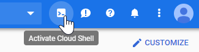</p><ol start="2"><li>在打開的對話框內，點擊「START CLOUD SHELL」：</li></ol><p>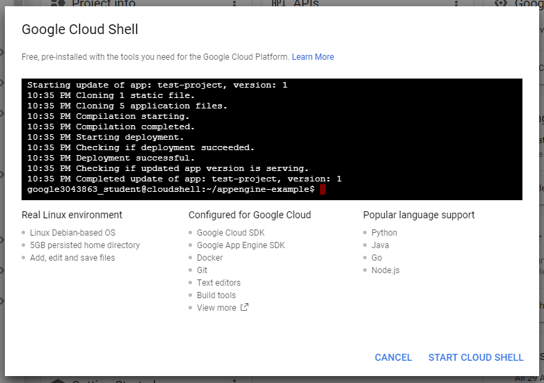</p><ol start="3"><li>連接和提供環境需要一些時間：</li></ol><p>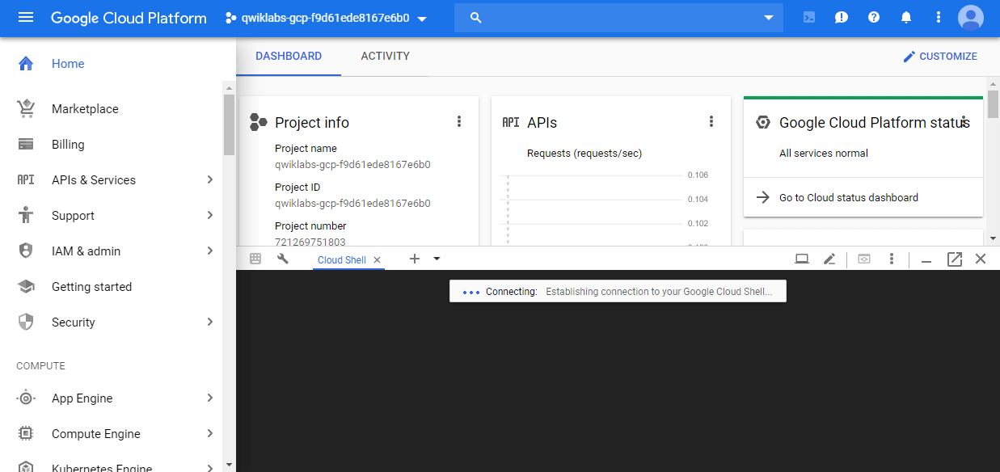</p><ol start="4"><li>連接後，就代表你已經過身份驗證，專案已設置為 <code>PROJECT_ID</code>，以下圖的為例，此專案的 ID 為 <code>qwiklabs-gcp-f9d61ede8167e6b0</code>：</li></ol><p>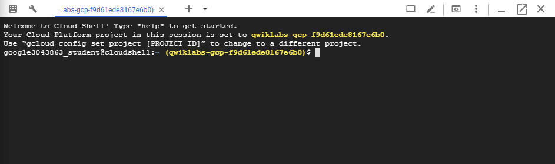</p><p><code>gcloud</code> 是 GCP 的 command-line 工具，他已預先安裝在 Cloud Shell 上，並且支援 tab 自動補齊 (tab-completion)。</p><p>使用下面指令可列出有效帳號名稱：</p><figure class="highlight shell"><table><tr><td class="gutter"><pre><span class="line">1</span><br><span class="line">2</span><br><span class="line">3</span><br><span class="line">4</span><br><span class="line">5</span><br><span class="line">6</span><br><span class="line">7</span><br></pre></td><td class="code"><pre><code class="hljs shell"><span class="hljs-meta">$</span><span class="bash"> gcloud auth list</span><br>          Credentialed Accounts<br>ACTIVE  ACCOUNT<br>*       google3043863_student@qwiklabs.net<br><br>To set the active account, run:<br>    $ gcloud config set account `ACCOUNT`<br></code></pre></td></tr></table></figure><p>可以使用以下指令列出專案 ID：</p><figure class="highlight shell"><table><tr><td class="gutter"><pre><span class="line">1</span><br><span class="line">2</span><br><span class="line">3</span><br><span class="line">4</span><br><span class="line">5</span><br></pre></td><td class="code"><pre><code class="hljs shell"><span class="hljs-meta">$</span><span class="bash"> gcloud config list project</span><br>[core]<br>project = qwiklabs-gcp-f9d61ede8167e6b0<br><br>Your active configuration is: [cloudshell-9292]<br></code></pre></td></tr></table></figure><blockquote><p>詳情可參考官方的 <a href="https://cloud.google.com/sdk/gcloud/" target="_blank" rel="noopener">Google Cloud gcloud Overview</a> 文件。</p></blockquote><h2 id="為所有資源設定預設的-region-和-zone"><a class="header-anchor" href="#為所有資源設定預設的-region-和-zone"></a>為所有資源設定預設的 region 和 zone</h2><p>在 Cloud Shell 中，執行以下指令設定預設 zone 為 <code>us-central1-a</code>：</p><figure class="highlight shell"><table><tr><td class="gutter"><pre><span class="line">1</span><br><span class="line">2</span><br></pre></td><td class="code"><pre><code class="hljs shell"><span class="hljs-meta">$</span><span class="bash"> gcloud config <span class="hljs-built_in">set</span> compute/zone us-central1<span class="hljs-_">-a</span></span><br>Updated property [compute/zone].<br></code></pre></td></tr></table></figure><p>在 Cloud Shell 中，執行以下指令設定預設 region 為 <code>us-central1</code>：</p><figure class="highlight shell"><table><tr><td class="gutter"><pre><span class="line">1</span><br><span class="line">2</span><br></pre></td><td class="code"><pre><code class="hljs shell"><span class="hljs-meta">$</span><span class="bash"> gcloud config <span class="hljs-built_in">set</span> compute/region us-central1</span><br>Updated property [compute/region].<br></code></pre></td></tr></table></figure><blockquote><p>詳情可參考官方的 <a href="https://cloud.google.com/compute/docs/regions-zones/" target="_blank" rel="noopener">Regions &amp; Zones</a> 文件。</p></blockquote><div class="info"><p>注意：在自己的機器上執行 <code>gcloud</code> 時，<code>config</code> 設定在 session 中保持不變 (persist across)。在 Cloud Shell 中，你需要為每個新的 session 或重新連接設定此項。</p></div><h2 id="建立多個-web-server-instance"><a class="header-anchor" href="#建立多個-web-server-instance"></a>建立多個 web server instance</h2><p>為了模擬來至一個叢集主機的服務，請使用 <a href="https://cloud.google.com/compute/docs/instance-templates" target="_blank" rel="noopener">Instance Templates</a> 和 <a href="https://cloud.google.com/compute/docs/instance-groups/" target="_blank" rel="noopener">Managed Instance Groups</a> 建立一個簡單的 Nginx web server 叢集來提供靜態內容。Instance Templates 定義叢集中每個 VM 的規格 (硬碟、CPU、記憶體…等)，Managed Instance Groups 使用 Instance Templates 實例化 (instantiate) 多個 VM instance。</p><p>要建立一個 Nginx web server 叢集，請建立以下內容：</p><ul><li>一個用來在每個 VM instance 啟動時設定 Nginx server 的 startup script</li><li>一個要使用 startup script 的 instance template</li><li>一個 target pool</li><li>一個使用 instance template 的 managed instance group</li></ul><h3 id="建立-startup-script"><a class="header-anchor" href="#建立-startup-script"></a>建立 startup script</h3><p>在 Cloud Shell 執行下面指令，建立要讓每個 VM instance 使用的 startup script。此 script 會在啟動時設定 Nginx server：</p><figure class="highlight bash"><table><tr><td class="gutter"><pre><span class="line">1</span><br><span class="line">2</span><br><span class="line">3</span><br><span class="line">4</span><br><span class="line">5</span><br><span class="line">6</span><br><span class="line">7</span><br></pre></td><td class="code"><pre><code class="hljs bash">cat &lt;&lt; EOF &gt; startup.sh<br><span class="hljs-meta">#! /bin/bash</span><br>apt-get update<br>apt-get install -y nginx<br>service nginx start<br>sed -i -- <span class="hljs-string">'s/nginx/Google Cloud Platform - '</span><span class="hljs-string">"\$HOSTNAME"</span><span class="hljs-string">'/'</span> /var/www/html/index.nginx-debian.html<br>EOF<br></code></pre></td></tr></table></figure><h3 id="建立-instance-template"><a class="header-anchor" href="#建立-instance-template"></a>建立 instance template</h3><p>建立一個使用 startup script 的 instance template：</p><ul><li><code>nginx-template</code>：instance template 的名稱</li><li><code>--metadata-from-file startup-script=startup.sh</code>：<code>--metadata-from-file</code> 參數會從 local 檔案中找到指定的 startup script</li></ul><figure class="highlight shell"><table><tr><td class="gutter"><pre><span class="line">1</span><br><span class="line">2</span><br></pre></td><td class="code"><pre><code class="hljs shell"><span class="hljs-meta">$</span><span class="bash"> gcloud compute instance-templates create nginx-template \</span><br>         --metadata-from-file startup-script=startup.sh<br></code></pre></td></tr></table></figure><p>輸出：</p><figure class="highlight shell"><table><tr><td class="gutter"><pre><span class="line">1</span><br><span class="line">2</span><br><span class="line">3</span><br></pre></td><td class="code"><pre><code class="hljs shell">Created [https://www.googleapis.com/compute/v1/projects/qwiklabs-gcp-.../global/instanceTemplates/nginx-template].<br>NAME            MACHINE_TYPE   PREEMPTIBLE  CREATION_TIMESTAMP<br>nginx-template  n1-standard-1               2019-04-22T04:53:53.045-07:00<br></code></pre></td></tr></table></figure><p>如果上面指令沒有提供明確的 template 設定，<code>gcloud compute</code> 會使用以下預設值建立 template：</p><ul><li>機型：<code>n1-standard-1</code></li><li>image：最新版的 Debian image</li><li>開機磁碟：以 instance 命名的新標準開機磁碟</li><li>網路：<code>default</code> VPC 網路</li><li>IP 位址：臨時的外部 IP 位址</li></ul><blockquote><p>詳情可參考官方的 <a href="https://cloud.google.com/sdk/gcloud/reference/compute/instance-templates/" target="_blank" rel="noopener"><code>gcloud compute instance-templates</code></a> 文件。</p></blockquote><blockquote><p>若想了解更多建立 instance template 的方法，詳情可參考官方的 <a href="https://cloud.google.com/compute/docs/instance-templates/create-instance-templates" target="_blank" rel="noopener">Creating Instance Templates</a> 文件。</p></blockquote><h3 id="建立-target-pool"><a class="header-anchor" href="#建立-target-pool"></a>建立 target pool</h3><p>target pool 資源定義了一組可以從 forwarding rules 接收收到流量的 instance。當 forwarding rules 將流量導向到 target pool 時，Google Cloud Load Balancing 會根據 source IP 和 port 以及目標 IP 和 port 的 hash 值，從這些 target pool 中選擇一個 instance。</p><p>建立 target pool，target pool 允許單個存取點到群組中的所有 instance，而且對於之後步驟的負載平衡來說是必需的：</p><figure class="highlight shell"><table><tr><td class="gutter"><pre><span class="line">1</span><br></pre></td><td class="code"><pre><code class="hljs shell"><span class="hljs-meta">$</span><span class="bash"> gcloud compute target-pools create nginx-pool</span><br></code></pre></td></tr></table></figure><p>輸出：</p><figure class="highlight shell"><table><tr><td class="gutter"><pre><span class="line">1</span><br><span class="line">2</span><br><span class="line">3</span><br></pre></td><td class="code"><pre><code class="hljs shell">Created [https://www.googleapis.com/compute/v1/projects/qwiklabs-gcp-.../regions/us-central1/targetPools/nginx-pool].<br>NAME        REGION       SESSION_AFFINITY  BACKUP  HEALTH_CHECKS<br>nginx-pool  us-central1  NONE<br></code></pre></td></tr></table></figure><blockquote><p>詳情可參考官方文件：</p><ul><li>建立 target pool 指令：<a href="https://cloud.google.com/sdk/gcloud/reference/compute/target-pools/create" target="_blank" rel="noopener"><code>gcloud compute target-pools create</code></a></li><li><a href="https://cloud.google.com/load-balancing/docs/network/" target="_blank" rel="noopener">Network Load Balancing Concepts</a></li><li><a href="https://cloud.google.com/load-balancing/docs/target-pools" target="_blank" rel="noopener">Using Target Pools</a></li></ul></blockquote><h3 id="建立-managed-instance-group"><a class="header-anchor" href="#建立-managed-instance-group"></a>建立 managed instance group</h3><p>使用 instance template 建立 managed instance group：</p><ul><li><code>nginx-group</code>：instance group 的名稱</li><li><code>--base-instance-name nginx</code>：其中的 <code>nginx</code> 是指在此 managed instance group 中建立的 instance 使用的名稱。由於這些 instance 都一樣，系統會用隨機字串來作為 instance 名稱的一部分，例如：如果 base 名稱是 <code>nginx</code>，instance 的名稱就可能會是 <code>nginx-cl3t</code>、<code>nginx-sqgw</code> … 等</li><li><code>--size 2</code>：instance group 的大小</li><li><code>--template nginx-template</code>：用於此群組的 instance template 的名稱</li><li><code>--target-pool nginx-pool</code>：要新增此 instance group 的 target pool 的名稱 (可多個 target pool)</li></ul><figure class="highlight shell"><table><tr><td class="gutter"><pre><span class="line">1</span><br><span class="line">2</span><br><span class="line">3</span><br><span class="line">4</span><br><span class="line">5</span><br></pre></td><td class="code"><pre><code class="hljs shell"><span class="hljs-meta">$</span><span class="bash"> gcloud compute instance-groups managed create nginx-group \</span><br>         --base-instance-name nginx \<br>         --size 2 \<br>         --template nginx-template \<br>         --target-pool nginx-pool<br></code></pre></td></tr></table></figure><p>輸出：</p><figure class="highlight shell"><table><tr><td class="gutter"><pre><span class="line">1</span><br><span class="line">2</span><br><span class="line">3</span><br></pre></td><td class="code"><pre><code class="hljs shell">Created [https://www.googleapis.com/compute/v1/projects/qwiklabs-gcp-.../zones/us-central1-a/instanceGroupManagers/nginx-group].<br>NAME         LOCATION       SCOPE  BASE_INSTANCE_NAME  SIZE  TARGET_SIZE  INSTANCE_TEMPLATE  AUTOSCALED<br>nginx-group  us-central1-a  zone   nginx               0     2            nginx-template     no<br></code></pre></td></tr></table></figure><blockquote><p>詳情可參考官方的 <a href="https://cloud.google.com/compute/docs/instance-groups/creating-groups-of-managed-instances" target="_blank" rel="noopener">Creating groups of managed instances</a> 文件。</p></blockquote><p>執行上面的指令後，會建立兩個 VM instance，名稱會以 <code>nginx-</code> 為前綴，可能需要等幾分鐘。</p><p>接著查看已建立的所有 compute engine instance：</p><figure class="highlight shell"><table><tr><td class="gutter"><pre><span class="line">1</span><br></pre></td><td class="code"><pre><code class="hljs shell"><span class="hljs-meta">$</span><span class="bash"> gcloud compute instances list</span><br></code></pre></td></tr></table></figure><p>輸出：</p><figure class="highlight shell"><table><tr><td class="gutter"><pre><span class="line">1</span><br><span class="line">2</span><br><span class="line">3</span><br></pre></td><td class="code"><pre><code class="hljs shell">NAME        ZONE           MACHINE_TYPE   PREEMPTIBLE  INTERNAL_IP  EXTERNAL_IP     STATUS<br>nginx-cl3t  us-central1-a  n1-standard-1               10.128.0.3   35.193.149.246  RUNNING<br>nginx-sqgw  us-central1-a  n1-standard-1               10.128.0.2   130.211.208.12  RUNNING<br></code></pre></td></tr></table></figure><h3 id="設定防火牆"><a class="header-anchor" href="#設定防火牆"></a>設定防火牆</h3><p>設定防火牆後，就可以透過 <code>EXTERNAL_IP</code> 位址和 80 port 來連接機器：</p><figure class="highlight shell"><table><tr><td class="gutter"><pre><span class="line">1</span><br></pre></td><td class="code"><pre><code class="hljs shell"><span class="hljs-meta">$</span><span class="bash"> gcloud compute firewall-rules create www-firewall --allow tcp:80</span><br></code></pre></td></tr></table></figure><p>輸出：</p><figure class="highlight shell"><table><tr><td class="gutter"><pre><span class="line">1</span><br><span class="line">2</span><br><span class="line">3</span><br><span class="line">4</span><br></pre></td><td class="code"><pre><code class="hljs shell">Creating firewall...⠛Created [https://www.googleapis.com/compute/v1/projects/qwiklabs-gcp-.../global/firewalls/www-firewall].<br>Creating firewall...done.<br>NAME          NETWORK  DIRECTION  PRIORITY  ALLOW   DENY  DISABLED<br>www-firewall  default  INGRESS    1000      tcp:80        False<br></code></pre></td></tr></table></figure><p>執行上面的指令後，應該就能透過外部 IP 位址 (也就是 <code>http://EXTERNAL_IP/</code> ) 來連接剛剛建立的兩個 instance，可以在各別的頁面中，看到各個 instance 的名稱：</p><p>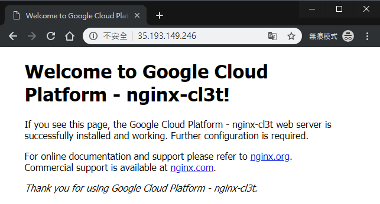</p><p>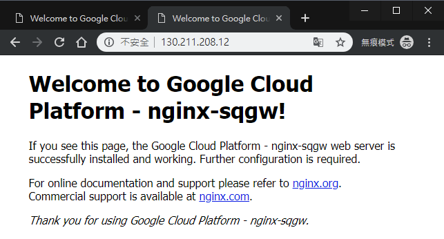</p><h2 id="建立-Network-Load-Balancer"><a class="header-anchor" href="#建立-Network-Load-Balancer"></a>建立 Network Load Balancer</h2><p>Network load balancing 允許你依據收到的 IP 協定資料 (例如：位址、port 和協定類型) 來平衡系統的負載。你還可以取得 HTTP(S) load balancing 沒有提供的一些選項。例如：可以對其他基於 TCP/UDP 的協定 (例如：SMTP 流量) 進行負載平衡。如果你的應用程式對 TCP 連接相關的特性感興趣，network load balancing 也允許你的應用程式去檢查封包，而 HTTP(S) load balancing 則沒有提供。</p><blockquote><p>詳情可參考官方的 <a href="https://cloud.google.com/compute/docs/load-balancing/network/" target="_blank" rel="noopener">Setting Up Network Load Balancing</a> 文件。</p></blockquote><p>針對你的 instance group 來建立 L3 network load balancer：</p><figure class="highlight shell"><table><tr><td class="gutter"><pre><span class="line">1</span><br><span class="line">2</span><br><span class="line">3</span><br><span class="line">4</span><br></pre></td><td class="code"><pre><code class="hljs shell"><span class="hljs-meta">$</span><span class="bash"> gcloud compute forwarding-rules create nginx-lb \</span><br>         --region us-central1 \<br>         --ports=80 \<br>         --target-pool nginx-pool<br></code></pre></td></tr></table></figure><p>輸出：</p><figure class="highlight shell"><table><tr><td class="gutter"><pre><span class="line">1</span><br></pre></td><td class="code"><pre><code class="hljs shell">Created [https://www.googleapis.com/compute/v1/projects/qwiklabs-gcp-.../regions/us-central1/forwardingRules/nginx-lb].<br></code></pre></td></tr></table></figure><p>Forwarding rule 要與 target pool 一起使用，以支援 load balancing 功能，要使用 load balancing 就必須建立 forwarding rule，這樣才會將流量導向到特定的 target pool (用於 load balancing)，而下面指令中的 <code>--ports=80</code> 代表指向 target pool 的外部 port 範圍。</p><p>列出專案中所有 Google Compute Engine (GCE) 的 Forwarding rule：</p><figure class="highlight shell"><table><tr><td class="gutter"><pre><span class="line">1</span><br></pre></td><td class="code"><pre><code class="hljs shell"><span class="hljs-meta">$</span><span class="bash"> gcloud compute forwarding-rules list</span><br></code></pre></td></tr></table></figure><p>輸出：</p><figure class="highlight shell"><table><tr><td class="gutter"><pre><span class="line">1</span><br><span class="line">2</span><br></pre></td><td class="code"><pre><code class="hljs shell">NAME      REGION       IP_ADDRESS      IP_PROTOCOL  TARGET<br>nginx-lb  us-central1  35.202.173.185  TCP          us-central1/targetPools/nginx-pool<br></code></pre></td></tr></table></figure><p>接著透過 <code>http://IP_ADDRESS/</code> 來存取 load balancer，<code>IP_ADDRESS</code> 是上面執行的指令中所輸出的 IP 位址。</p><p>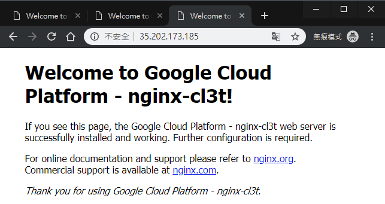</p><h2 id="建立-HTTP-S-Load-Balancer"><a class="header-anchor" href="#建立-HTTP-S-Load-Balancer"></a>建立 HTTP(S) Load Balancer</h2><p>HTTP(S) Load Balancing 提供全球性的 load balancing，能將 HTTP 請求送往你的 instance。你可以設定 URL 規則，將一些 URL 路由 (route) 到一組 instance，並將其他 URL 路由到其他 instance。請求都會路由到最接近使用者的 instance group，前提是該 group 具有足夠的資源，並且適合請求。如果最近的 group 沒有足夠的資源，那請求將會送至具有足夠資源，並且是最接近使用者的 group。</p><blockquote><p>詳情可參考官方的 <a href="https://cloud.google.com/compute/docs/load-balancing/http/" target="_blank" rel="noopener">HTTP(S) Load Balancer</a> 文件。</p></blockquote><p>首先，建立 <a href="https://cloud.google.com/compute/docs/load-balancing/health-checks" target="_blank" rel="noopener">health check</a>。health check 可以確認 instance 是否有回應 HTTP 或 HTTPS 流量，其他的 <code>http-basic-check</code> 是 legacy health check 的名稱。在專案中，每個 legacy health check 的名稱不能重複：</p><figure class="highlight shell"><table><tr><td class="gutter"><pre><span class="line">1</span><br></pre></td><td class="code"><pre><code class="hljs shell"><span class="hljs-meta">$</span><span class="bash"> gcloud compute http-health-checks create http-basic-check</span><br></code></pre></td></tr></table></figure><p>輸出：</p><figure class="highlight shell"><table><tr><td class="gutter"><pre><span class="line">1</span><br><span class="line">2</span><br><span class="line">3</span><br></pre></td><td class="code"><pre><code class="hljs shell">Created [https://www.googleapis.com/compute/v1/projects/qwiklabs-gcp-.../global/httpHealthChecks/http-basic-check].<br>NAME              HOST  PORT  REQUEST_PATH<br>http-basic-check        80    /<br></code></pre></td></tr></table></figure><p>定義 HTTP service，並將 port 號 map 到 instance group 的相關 port。現在 load balancing service 可以將流量 forward 到指定的 port 號：</p><figure class="highlight shell"><table><tr><td class="gutter"><pre><span class="line">1</span><br><span class="line">2</span><br><span class="line">3</span><br></pre></td><td class="code"><pre><code class="hljs shell"><span class="hljs-meta">$</span><span class="bash"> gcloud compute instance-groups managed \</span><br>       set-named-ports nginx-group \<br>       --named-ports http:80<br></code></pre></td></tr></table></figure><p>輸出：</p><figure class="highlight shell"><table><tr><td class="gutter"><pre><span class="line">1</span><br></pre></td><td class="code"><pre><code class="hljs shell">Updated [https://www.googleapis.com/compute/v1/projects/qwiklabs-gcp-.../zones/us-central1-a/instanceGroups/nginx-group].<br></code></pre></td></tr></table></figure><blockquote><p>詳情可參考官方的 <a href="https://cloud.google.com/compute/docs/instance-groups/creating-groups-of-managed-instances" target="_blank" rel="noopener">Creating groups of managed instances</a> 文件。</p></blockquote><p>建立 <a href="https://cloud.google.com/compute/docs/reference/latest/backendServices" target="_blank" rel="noopener">後端服務 (backend service)</a>：</p><figure class="highlight shell"><table><tr><td class="gutter"><pre><span class="line">1</span><br><span class="line">2</span><br><span class="line">3</span><br><span class="line">4</span><br></pre></td><td class="code"><pre><code class="hljs shell"><span class="hljs-meta">$</span><span class="bash"> gcloud compute backend-services create nginx-backend \</span><br>      --protocol HTTP \<br>      --http-health-checks http-basic-check \<br>      --global<br></code></pre></td></tr></table></figure><p>輸出：</p><figure class="highlight shell"><table><tr><td class="gutter"><pre><span class="line">1</span><br><span class="line">2</span><br><span class="line">3</span><br></pre></td><td class="code"><pre><code class="hljs shell">Created [https://www.googleapis.com/compute/v1/projects/qwiklabs-gcp-.../global/backendServices/nginx-backend].<br>NAME           BACKENDS  PROTOCOL<br>nginx-backend            HTTP<br></code></pre></td></tr></table></figure><p>將 instance group 加到後端服務中：</p><figure class="highlight shell"><table><tr><td class="gutter"><pre><span class="line">1</span><br><span class="line">2</span><br><span class="line">3</span><br><span class="line">4</span><br></pre></td><td class="code"><pre><code class="hljs shell"><span class="hljs-meta">$</span><span class="bash"> gcloud compute backend-services add-backend nginx-backend \</span><br>    --instance-group nginx-group \<br>    --instance-group-zone us-central1-a \<br>    --global<br></code></pre></td></tr></table></figure><p>輸出：</p><figure class="highlight shell"><table><tr><td class="gutter"><pre><span class="line">1</span><br></pre></td><td class="code"><pre><code class="hljs shell">Updated [https://www.googleapis.com/compute/v1/projects/qwiklabs-gcp-.../global/backendServices/nginx-backend].<br></code></pre></td></tr></table></figure><p>建立一個預設的 URL map，將所有收到的請求導向你的所有 instance：</p><figure class="highlight shell"><table><tr><td class="gutter"><pre><span class="line">1</span><br><span class="line">2</span><br></pre></td><td class="code"><pre><code class="hljs shell"><span class="hljs-meta">$</span><span class="bash"> gcloud compute url-maps create web-map \</span><br>    --default-service nginx-backend<br></code></pre></td></tr></table></figure><p>輸出：</p><figure class="highlight shell"><table><tr><td class="gutter"><pre><span class="line">1</span><br><span class="line">2</span><br><span class="line">3</span><br></pre></td><td class="code"><pre><code class="hljs shell">Created [https://www.googleapis.com/compute/v1/projects/qwiklabs-gcp-.../global/urlMaps/web-map].<br>NAME     DEFAULT_SERVICE<br>web-map  backendServices/nginx-backend<br></code></pre></td></tr></table></figure><blockquote><p>若要根據請求的 URL 將流量導向不同的 instance，詳情可參考官方的 <a href="https://cloud.google.com/compute/docs/load-balancing/http/content-based-example" target="_blank" rel="noopener">content-based routing</a> 文件。</p></blockquote><p>建立 target HTTP proxy，將請求路由到 URL map：</p><figure class="highlight shell"><table><tr><td class="gutter"><pre><span class="line">1</span><br><span class="line">2</span><br></pre></td><td class="code"><pre><code class="hljs shell"><span class="hljs-meta">$</span><span class="bash"> gcloud compute target-http-proxies create http-lb-proxy \</span><br>    --url-map web-map<br></code></pre></td></tr></table></figure><p>輸出：</p><figure class="highlight shell"><table><tr><td class="gutter"><pre><span class="line">1</span><br><span class="line">2</span><br><span class="line">3</span><br></pre></td><td class="code"><pre><code class="hljs shell">Created [https://www.googleapis.com/compute/v1/projects/qwiklabs-gcp-.../global/targetHttpProxies/http-lb-proxy].<br>NAME           URL_MAP<br>http-lb-proxy  web-map<br></code></pre></td></tr></table></figure><p>建立 <a href="https://cloud.google.com/load-balancing/docs/https/global-forwarding-rules" target="_blank" rel="noopener">global forwarding rule</a>，以處理和路由收到的請求。forwarding rule 會根據指定的 IP 位址、IP 協定和 port，將流量送至特定的 target HTTP 或 HTTPS proxy。global forwarding rule 不支援多 port。</p><figure class="highlight shell"><table><tr><td class="gutter"><pre><span class="line">1</span><br><span class="line">2</span><br><span class="line">3</span><br><span class="line">4</span><br></pre></td><td class="code"><pre><code class="hljs shell"><span class="hljs-meta">$</span><span class="bash"> gcloud compute forwarding-rules create http-content-rule \</span><br>        --global \<br>        --target-http-proxy http-lb-proxy \<br>        --ports 80<br></code></pre></td></tr></table></figure><p>輸出：</p><figure class="highlight shell"><table><tr><td class="gutter"><pre><span class="line">1</span><br></pre></td><td class="code"><pre><code class="hljs shell">Created [https://www.googleapis.com/compute/v1/projects/qwiklabs-gcp-.../global/forwardingRules/http-content-rule].<br></code></pre></td></tr></table></figure><p>建立 global forwarding rule 後，設定可能需要幾分鐘才能傳播 (propagate)：</p><figure class="highlight shell"><table><tr><td class="gutter"><pre><span class="line">1</span><br></pre></td><td class="code"><pre><code class="hljs shell"><span class="hljs-meta">$</span><span class="bash"> gcloud compute forwarding-rules list</span><br></code></pre></td></tr></table></figure><p>輸出：</p><figure class="highlight shell"><table><tr><td class="gutter"><pre><span class="line">1</span><br><span class="line">2</span><br><span class="line">3</span><br></pre></td><td class="code"><pre><code class="hljs shell">NAME               REGION       IP_ADDRESS      IP_PROTOCOL  TARGET<br>http-content-rule               34.96.77.47     TCP          http-lb-proxy<br>nginx-lb           us-central1  35.202.173.185  TCP          us-central1/targetPools/nginx-pool<br></code></pre></td></tr></table></figure><p>複製 forwarding rule 內的 <code>http-content-rule</code> 中的 <code>IP_ADDRESS</code>。</p><p>你可能需要幾分鐘才能透過瀏覽器連接到 <code>http://IP_ADDRESS/</code>。如果無法連接 (就像下圖這樣)，請稍等一下，再重新整理瀏覽器：</p><p>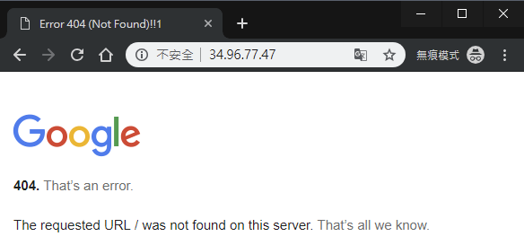</p><p>下面兩張圖就是多次連接 <code>http://IP_ADDRESS/</code> 的時候，常會看到畫面在這兩個之前建立的 VM instance 間切換：</p><p>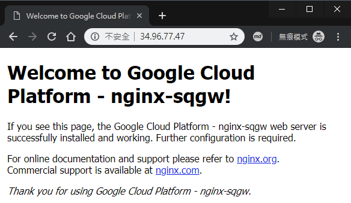</p><p>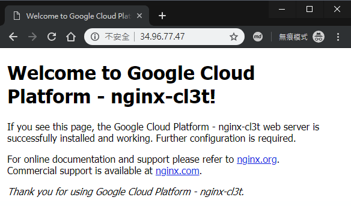</p><h2 id="參考來源"><a class="header-anchor" href="#參考來源"></a>參考來源</h2><ul><li><a href="https://www.qwiklabs.com/focuses/558?parent=catalog" target="_blank" rel="noopener">Set Up Network and HTTP Load Balancers</a></li></ul></div><div class="article-tags tags"><a href="/tags/gcp/" title="GCP">GCP</a> <a href="/tags/http/" title="HTTP">HTTP</a> <a href="/tags/load-balancer/" title="Load Balancer">Load Balancer</a></div></section><div class="article-share-links"><span>分享：</span> <a class="fab fa-facebook-f" title="Facebook" target="_blank" href="javascript:window.open('https://www.facebook.com/sharer.php?u=https%3A%2F%2Ftitangene.github.io%2Farticle%2Fgcp-network-and-http-load-balancer.html', 'Share on Facebook','width=600, height=600')"></a> <a class="fab fa-twitter" title="Twitter" target="_blank" href="javascript:window.open('https://twitter.com/share?url=https%3A%2F%2Ftitangene.github.io%2Farticle%2Fgcp-network-and-http-load-balancer.html&amp;text=在 GCP 建立 Network Load Balancer 和 HTTP Load Balancer&amp;hashtags=GCP,HTTP,LoadBalancer&amp;via=titangene_blog', 'Share on Twitter','width=600, height=260')"></a> <a class="fab fa-linkedin-in" title="Linkedin" target="_blank" href="javascript:window.open('https://www.linkedin.com/shareArticle?mini=true&amp;url=https%3A%2F%2Ftitangene.github.io%2Farticle%2Fgcp-network-and-http-load-balancer.html&amp;title=在 GCP 建立 Network Load Balancer 和 HTTP Load Balancer', 'Share on Linkedin','width=600, height=600')"></a> <a class="fab fa-facebook-messenger" title="Facebook Messenger" target="_blank" href="javascript:window.open('http://www.facebook.com/dialog/send?app_id=2470546159839111&amp;link=https%3A%2F%2Ftitangene.github.io%2Farticle%2Fgcp-network-and-http-load-balancer.html&amp;display=popup&amp;redirect_uri=https%3A%2F%2Fwww.facebook.com%2Fdialog%2Freturn%2Fclose%23_%3D_', 'Send in Messenger','width=600, height=600')"></a> <a class="fab fa-telegram-plane" href="https://telegram.me/share/url?url=https%3A%2F%2Ftitangene.github.io%2Farticle%2Fgcp-network-and-http-load-balancer.html&text=在 GCP 建立 Network Load Balancer 和 HTTP Load Balancer" target="_blank"></a></div><nav id="article-nav"><a href="/article/getting-started-with-google-k8s-engine.html" id="article-nav-prev" class="article-nav-link-wrap" title="Google Kubernetes Engine (GKE) 入門" rel="prev"><strong class="article-nav-caption">Prev</strong><p class="article-nav-title">Google Kubernetes Engine (GKE) 入門</p><i class="fas fa-angle-left"></i> </a><a href="/article/networking-in-docker-compose.html" id="article-nav-next" class="article-nav-link-wrap" title="透過 Docker Compose 設定 network" rel="next"><strong class="article-nav-caption">Next</strong><p class="article-nav-title">透過 Docker Compose 設定 network</p><i class="fas fa-angle-right"></i></a></nav><section id="list_related_posts"><h2>相關文章</h2><ul class="related-posts"><li class="related-posts-item"><a class="related-posts-link" href="/article/getting-started-with-google-k8s-engine.html">Google Kubernetes Engine (GKE) 入門</a><div class="related-posts-item-abstract">本篇是紀錄在 Google 的 Qwiklab 平台內，完成「Kubernetes Engine: Qwik Start」這個 quest 所學到的內容，包括如何透過 GKE 建立容器和部署容器化應用程式。Google</div></li><li class="related-posts-item"><a class="related-posts-link" href="/article/gcp-vm-nignx-web-server.html">在 GCP 上建立 VM 架設 NIGNX Web server</a><div class="related-posts-item-abstract">本篇是紀錄在 Google 的 Qwiklab 平台內，完成「Creating a Virtual Machine」這個 quest 所學到的內容，包括如何透過 GCP Console 和 command-line 工具</div></li><li class="related-posts-item"><a class="related-posts-link" href="/article/gcp-vm-windows-server.html">在 GCP 上建立 VM 架設 Windows Server</a><div class="related-posts-item-abstract">本篇是紀錄在 Google 的 Qwiklab 平台內，完成「Compute Engine: Qwik Start - Windows」這個 quest 所學到的內容，包括如何透過 GCP Console 在 GCP 建</div></li><li class="related-posts-item"><a class="related-posts-link" href="/article/getting-started-with-cloud-shell-gcloud-and-gsutil.html">Google Cloud Shell 入門：gcloud & gsutil</a><div class="related-posts-item-abstract">本篇是紀錄在 Google 的 Qwiklab 平台內，完成「Getting Started with Cloud Shell &amp; gcloud」這個 quest 所學到的內容，包括如何使用 gcloud 指令，</div></li><li class="related-posts-item"><a class="related-posts-link" href="/article/getting-started-with-gcp.html">GCP (Google Cloud Platform) 入門</a><div class="related-posts-item-abstract">本篇是紀錄在 Google 的 Qwiklab 平台內，完成「A Tour of Qwiklabs and the Google Cloud Platform」這個 quest 所學到的內容，包括如何使用以及認識 Qwi</div></li></ul></section><section class="comments" id="comments"><h2>討論區</h2><div id="gitalk-container"></div><div id="disqus_thread" style="margin-top:20px"><noscript>Please enable JavaScript to view the <a href="https://disqus.com/?ref_noscript" target="_blank" rel="noopener">comments powered by Disqus.</a></noscript></div></section></article><script>window.subData={title:"在 GCP 建立 Network Load Balancer 和 HTTP Load Balancer",tools:!0}</script></div><aside class="l_side"><section class="m_widget about"><div class="avatar-section"><style>.avatar-cover{background:url(/images/avatar_cover.jpg) 0 10%/cover no-repeat}</style><div class="avatar-cover"></div></div><div class="header">Titangene</div><div class="content"><div class="desc">利用 blog 紀錄學習歷程</div></div><div class="content"><meta itemprop="url" content="https://titangene.github.io"><div class="social-wrapper"><a itemprop="sameAs" href="https://github.com/titangene" class="social github" target="_blank" rel="external"><span class="fab fa-github-alt"></span> </a><a itemprop="sameAs" href="https://www.facebook.com/titangene.tw" class="social facebook" target="_blank" rel="external"><span class="fab fa-facebook-square"></span> </a><a itemprop="sameAs" href="https://www.instagram.com/titangene/" class="social instagram" target="_blank" rel="external"><span class="fab fa-instagram"></span> </a><a itemprop="sameAs" href="https://www.flickr.com/photos/titangene" class="social flickr" target="_blank" rel="external"><span class="fab fa-flickr"></span> </a><a itemprop="sameAs" href="/atom.xml" class="social rss" target="_blank" rel="external"><span class="fas fa-rss"></span></a></div></div></section><section class="m_widget facebook_page"><div class="fb-page" data-href="https://www.facebook.com/titangene.blog/" data-width="250" data-small-header="false" data-adapt-container-width="false" data-hide-cover="false" data-show-facepile="true"><blockquote cite="https://www.facebook.com/titangene.blog/" class="fb-xfbml-parse-ignore"><p><a href="https://www.facebook.com/titangene.blog/" class="social facebook" target="_blank"><span class="fab fa-facebook-square"></span></a></p><p><a href="https://www.facebook.com/titangene.blog/" target="_blank" rel="noopener">Titangene Blog</a></p><p>Loading...</p></blockquote></div></section><section class="m_widget recent"><div class="header">Recents</div><div class="content"><ul class="entry"><li><a itemprop="url" class="flat-box" href="/article/jest-async-test.html"><time>2020-06-28</time><div class="name">Jest：非同步測試</div></a></li><li><a itemprop="url" class="flat-box" href="/article/jest-setup-teardown.html"><time>2020-06-21</time><div class="name">Jest：Setup &amp; Teardown</div></a></li><li><a itemprop="url" class="flat-box" href="/article/jest-describe-test-case.html"><time>2020-06-14</time><div class="name">Jest：Describe &amp; Test case</div></a></li><li><a itemprop="url" class="flat-box" href="/article/jest-matcher-assertion.html"><time>2020-06-07</time><div class="name">Jest：Matcher &amp; Assertion</div></a></li><li><a itemprop="url" class="flat-box" href="/article/jest-typescript.html"><time>2020-05-31</time><div class="name">Jest + TypeScript：建置測試環境</div></a></li><li><a itemprop="url" class="flat-box" href="/article/jest-build-test-env.html"><time>2020-05-24</time><div class="name">Jest：建置測試環境 (包含 Babel)</div></a></li><li><a itemprop="url" class="flat-box" href="/article/sass-import-rule.html"><time>2020-05-17</time><div class="name">Sass：@import rule</div></a></li></ul></div></section></aside><script>setLoadingBarProgress(60)</script></div></div><footer id="footer" class="clearfix"><div class="social-wrapper"><a href="https://github.com/titangene" class="social github" target="_blank" rel="external"><span class="fab fa-github-alt"></span> </a><a href="https://www.facebook.com/titangene.tw" class="social facebook" target="_blank" rel="external"><span class="fab fa-facebook-square"></span> </a><a href="https://www.instagram.com/titangene/" class="social instagram" target="_blank" rel="external"><span class="fab fa-instagram"></span> </a><a href="https://www.flickr.com/photos/titangene" class="social flickr" target="_blank" rel="external"><span class="fab fa-flickr"></span> </a><a href="/atom.xml" class="social rss" target="_blank" rel="external"><span class="fas fa-rss"></span></a></div><div>© 2018 - 2020 <span itemprop="copyrightHolder">Titangene</span></div><div>Powered by <a href="https://hexo.io/" target="_blank" class="codename" rel="external noopener">Hexo</a> - Theme <a href="https://github.com/stkevintan/hexo-theme-material-flow" target="_blank" class="codename" rel="external noopener">MaterialFlow</a></div><div><a rel="license noopener" href="http://creativecommons.org/licenses/by-nc-sa/4.0/" target="_blank" rel="external noopener"></a></div></footer><script>setLoadingBarProgress(80)</script><script src="//cdnjs.cloudflare.com/ajax/libs/jquery/2.1.4/jquery.min.js"></script><script src="https://cdnjs.cloudflare.com/ajax/libs/clipboard.js/2.0.0/clipboard.min.js"></script><script src="https://unpkg.com/gitalk/dist/gitalk.min.js"></script><script src="/js/jquery.fitvids.js"></script><script>var SEARCH_SERVICE="hexo",ROOT="/";ROOT.endsWith("/")||(ROOT+="/")</script><script src="/js/search.js"></script><script src="/js/app.js"></script><script src="/js/clipboard-use.js"></script><script type="text/javascript">var gitalk=new Gitalk({clientID:"dd1684f31ee17e25c22b",clientSecret:"4b51bb4a5996b04d58821a6e3da8558f23da4cdf",id:window.location.pathname,repo:"hexo-blog",owner:"titangene",admin:"titangene",distractionFreeMode:"true"});gitalk.render("gitalk-container")</script><script>var disqus_shortname="titangene-blog",disqus_config=function(){this.page.url="https://titangene.github.io/article/gcp-network-and-http-load-balancer.html",this.page.identifier="article/gcp-network-and-http-load-balancer.html",this.page.title="在 GCP 建立 Network Load Balancer 和 HTTP Load Balancer"};!function(){var t=document.createElement("script");t.async=!0,t.src="//"+disqus_shortname+".disqus.com/embed.js",t.setAttribute("data-timestamp",""+new Date),(document.head||document.body).appendChild(t)}()</script><script id="dsq-count-scr" src="https://titangene-blog.disqus.com/count.js" async></script><div id="fb-root"></div><script>window.fbAsyncInit=function(){FB.init({appId:"2470546159839111",autoLogAppEvents:!0,xfbml:!0,version:"v2.11"}),FB.AppEvents.logPageView()},function(e,n,t){var o,s=e.getElementsByTagName(n)[0];e.getElementById(t)||((o=e.createElement(n)).id=t,o.src="//connect.facebook.net/zh_TW/sdk.js",s.parentNode.insertBefore(o,s))}(document,"script","facebook-jssdk")</script><script>setLoadingBarProgress(100)</script></body>